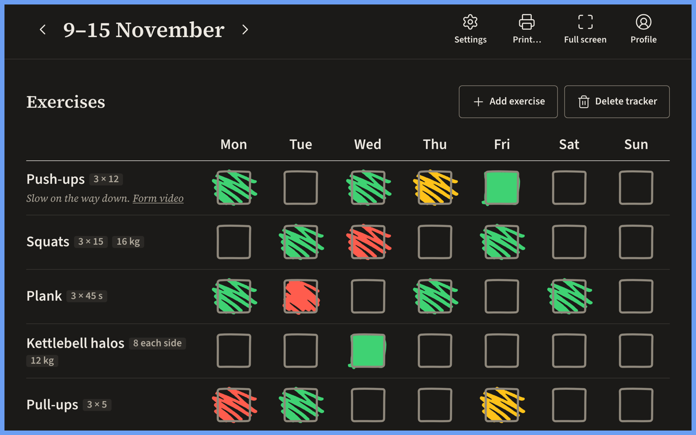
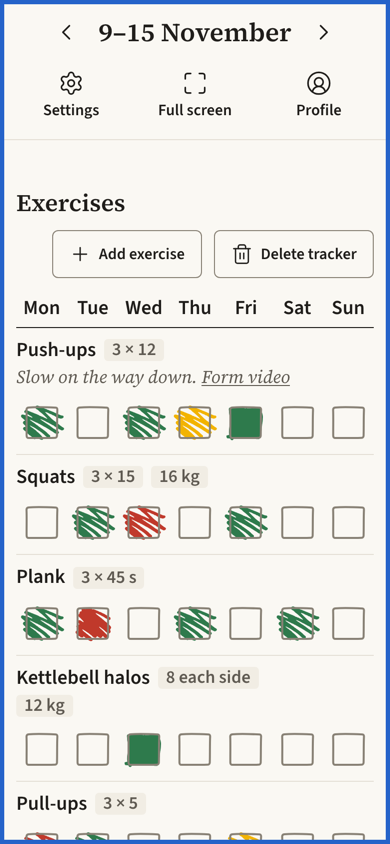
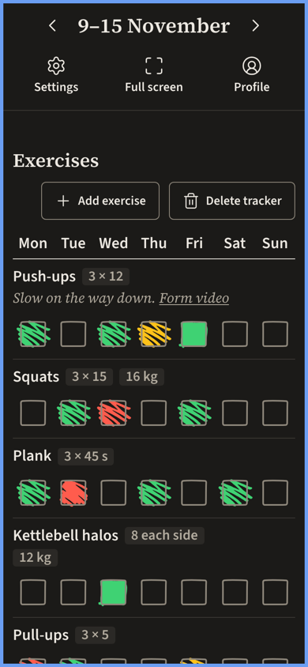
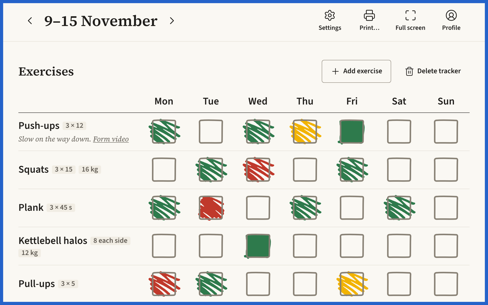
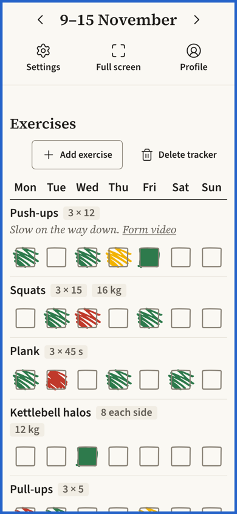
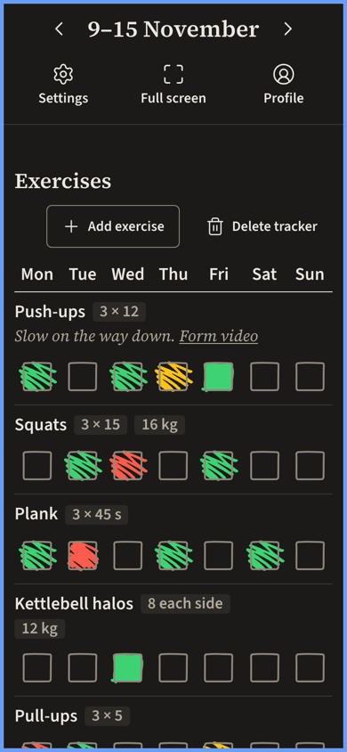
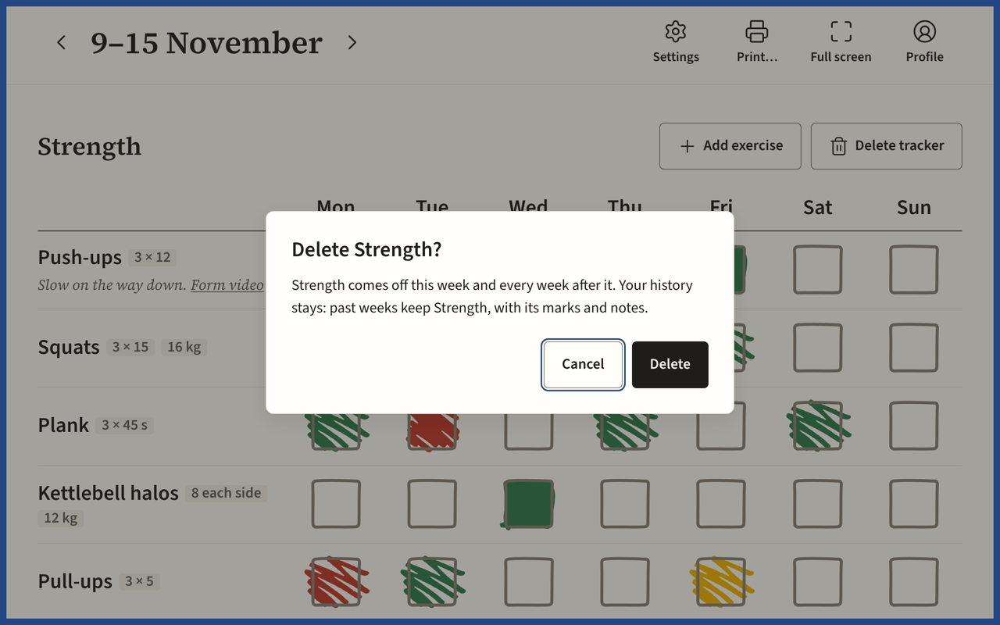
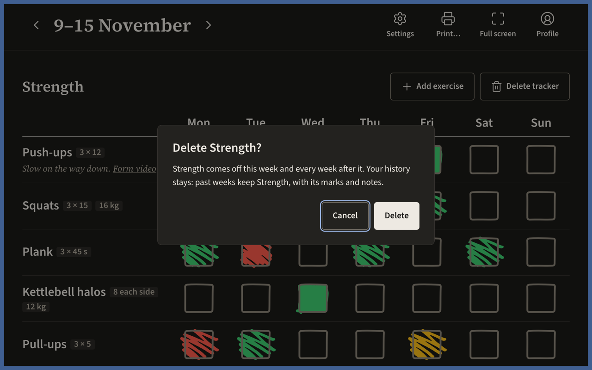
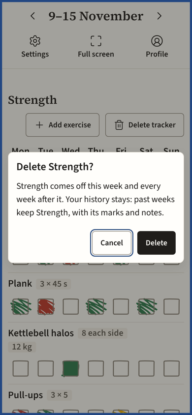
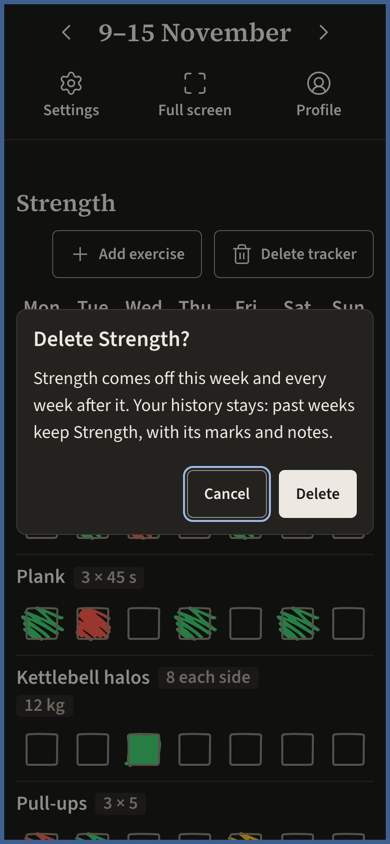

<title>Edit plan: Delete tracker</title>
<meta name="claude:viewport-fit-sides" content="cover">
<link rel="stylesheet" href="tokens.css">
<!-- A mockup (design-system skill, references/mockups.md). Every picture is the real app, signed in
     as the demo account, with the proposal drawn into its page before the screenshot. -->
<style>
  body { margin: 0; background: var(--canvas); color: var(--ink); font-family: var(--font-sans); }
  .mockup-page { padding-left: max(16px, env(safe-area-inset-left, 0px)); padding-right: max(16px, env(safe-area-inset-right, 0px));
    padding-block: var(--space-8, 32px) var(--space-16, 64px); max-width: 1360px; margin: 0 auto; display: grid; gap: var(--space-12, 48px); }
  .mockup-head { display: grid; gap: var(--space-2, 8px); max-width: 70ch; }
  .mockup-head h1, .option h2, .option h3 { margin: 0; text-wrap: balance; }
  .mockup-head p, .option p, .option li { margin: 0; }
  .option ul.points { margin: 0; padding-left: 1.2em; display: grid; gap: 4px; max-width: 75ch; }
  .mockup-meta { color: var(--ink-secondary); }
  .option { display: grid; gap: var(--space-4, 16px); border-top: 1px solid var(--line); padding-top: var(--space-8, 32px); }
  .option-head { display: flex; flex-wrap: wrap; align-items: baseline; gap: var(--space-2, 8px) var(--space-3, 12px); }
  .option-tag { color: var(--ink-secondary); }
  .option[data-recommended] .option-tag::after { content: " · Recommended"; color: var(--ink); }
  .decided { color: var(--ink-secondary); }
  .shots { display: grid; grid-template-columns: repeat(auto-fit, minmax(min(100%, 520px), 1fr)); gap: var(--space-4, 16px); }
  .phones { display: grid; grid-template-columns: repeat(auto-fit, minmax(min(100%, 260px), 330px)); gap: var(--space-4, 16px); }
  figure { margin: 0; min-width: 0; display: grid; gap: var(--space-2, 8px); align-content: start; }
  figure img { display: block; width: 100%; height: auto; border: 1px solid var(--line); border-radius: var(--radius-lg, 10px); }
  figcaption { color: var(--ink-secondary); }
  :focus-visible { outline: 2px solid var(--focus); outline-offset: 2px; }
</style>

<main class="mockup-page">
  <header class="mockup-head">
    <p class="caption mockup-meta">Mockup · 2026-11-14 · Tracker</p>
    <h1 class="title-1">Edit plan: Delete tracker</h1>
    
    <p class="body">Two changes in Edit plan. The trash can at the end of each row is gone: an item is
      removed from its own page. "Delete tracker" sits to the right of Add, and asks first.</p>
    <p class="body decided"><strong>Decided:</strong> A, the bordered button (John, 14 November). Deleting
      takes the tracker off this week and the weeks after it; past weeks keep it, with its marks and notes.
      Exercises becomes Strength on screen.</p>
  </header>
  <section class="option" id="a" aria-labelledby="a-h">
  <div class="option-head"><h2 class="title-2" id="a-h">A. Delete tracker as a bordered button, like Add</h2><span class="label option-tag">Option A · Chosen</span></div>
  
  <p class="body">The same secondary button as Add: a border, the trash icon and the words. Both buttons carry the same weight.</p>
  <div class="shots">
<figure><figcaption class="caption">Desktop · Light</figcaption></figure>
<figure><figcaption class="caption">Desktop · Dark</figcaption></figure>
</div>
<div class="phones">
<figure><figcaption class="caption">Phone · Light</figcaption></figure>
<figure><figcaption class="caption">Phone · Dark</figcaption></figure>
</div>
</section><section class="option" id="b" aria-labelledby="b-h">
  <div class="option-head"><h2 class="title-2" id="b-h">B. Delete tracker as a quiet button</h2><span class="label option-tag">Option B</span></div>
  
  <p class="body">No border until the pointer is on it, as Arrange sections on an item page. Deleting a tracker is rare and can't be undone, so it carries less weight than Add, the button used every week.</p>
  <div class="shots">
<figure><figcaption class="caption">Desktop · Light</figcaption></figure>
<figure><figcaption class="caption">Desktop · Dark</figcaption></figure>
</div>
<div class="phones">
<figure><figcaption class="caption">Phone · Light</figcaption></figure>
<figure><figcaption class="caption">Phone · Dark</figcaption></figure>
</div>
</section><section class="option" id="dialog" aria-labelledby="dialog-h">
  <div class="option-head"><h2 class="title-2" id="dialog-h">The question before deleting</h2><span class="label option-tag">Round 2</span></div>
  
  <p class="body">The app's own confirmation dialog (ConfirmDialog): the question names the tracker, the body says what goes and that the history stays, and the button repeats the verb. No red button, as the system's rule says. Cancel has focus, and Escape cancels.</p>
  <p class="body">Round 2: "Strength comes off this week and every week after it. Your history stays: past weeks keep Strength, with its marks and notes."</p>
  <div class="shots">
<figure><figcaption class="caption">Desktop · Light</figcaption></figure>
<figure><figcaption class="caption">Desktop · Dark</figcaption></figure>
</div>
<div class="phones">
<figure><figcaption class="caption">Phone · Light</figcaption></figure>
<figure><figcaption class="caption">Phone · Dark</figcaption></figure>
</div>
</section>
</main>
